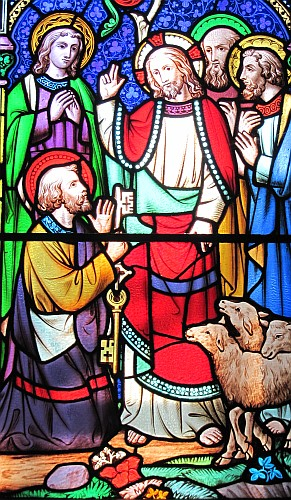

Là-d'ssus les Pharisiens et les Saducéens vîndrent à li à seule fîn d'l'êprouver, et i' lî d'mandîdrent d'lus mouontrer tchique sîngne du ciel. Mais i' lus rêponnit, "Au sé ou dites, 'I' f'tha bé, viyant qu'lé ciel est rouoge.' Et au matîn ou dites, 'Y'étha aniet d'l'ôrage, viyant qu'lé ciel est enfeuntchi et rouogeâtre.' Hypocrites! Ou savez don r'connaître chein qu'les divèrses appathences du ciel prédithent, mais ou n'avez pon discèrné les sîngnes du temps qué Dgieu a mèrtchi. Chutte nâtion corrompue d'pâlièrres d'mande un sîngne, et nou n'li'en pon badra d'aut' qu'lé chein du prophète Jônas!" Là-d'ssus i' les laîssit et s'en fut.
Et quand les discipl'yes vîndrent à l'aut' bord, il' avaient oublié d'apporter du pain. Et Jésû lus dit, "Mêfi'-ous du l'vain des Pharisiens et des Saducéens!"
I' lus entré-dêrenglyîdrent, "J'n'avons pon apporté du pain!"
Et Jésû r'mèrtchit chenna et dit, "Vous dé bein p'tit d'fouai! Pouortchi qu'ous entré-dêrenglyiz d'mêmes, viyant qu'ou n'avez pon d'pain? N'viy'-ous pon acouo, n'vos ramémouaithez pon des chîn pains ès chîn mille, et combein qu'ou ramâssîdres dé pann'lées? Ou des sept pains ès quat' mille, et combein qu'ou ramâssîdres dé pann'lées? Coumme tchi qu'ou n'comprannez pon qué j'vos ai pâlé, pon entouor lé pain, mais qu'il est d'mêtchi d'vos mêfier du l'vain des Pharisiens et Saducéens?"
Épis i' comprîndrent qu'i' n'voulait pon dithe lé l'vain d'pain, mais l'ensîngnage des Pharisiens et Saducéens.
Assa les discipl'yes, quand il' eûdrent pâssé d'l'aut' bord dé l'ieau, avaient oublié d'prendre des pains. Jésû lus dit, "Ayiz souain d'vos garder du l'vain des Pharisiens et des Saducéens."
Mais i' pensaient et lus entré-dithaient, "Ch'est viyant qué j'n'avons pon prîns d'pains."
Jésû, quand i' réalîsit chenna, lus dit, "Houmme dé p'tit d'fouai, pouortchi qu'ou dites qu'ou n'avez pon prîns d'pains? Ch'est-i' qu'ou n'comprannez pon acouo, et n'vos souveint-i' pon qu'chîn pains rassâsyîdrent chîn mille hoummes, et coumbein qu'ous en emportîdres dé pann'lées; et qu'sept pains rassâsyîdrent quat' mille hoummes, et coumbein qu'ous en emportîdres dé pann'lées? Comment ch'est qu'ou n'comprannez pon qué ch'n'est pon du pain qué j'vos pâlais quand j'vos ai dit d'vos garder du l'vain des Pharisiens et des Saducéens?" Là-d'ssus i' comprîndrent qu'i' n'lus avait pon dit d'lus garder du l'vain qu'nou met dans l'pain, mais d'la doctrinne des Pharisiens et des Saducéens.

Quand Jésû vînt au vaîthinné d'Césathée dé Ph'lippe, i' tchestchionnit des discipl'yes et lus dit, "Tchi qu'lé monde dithent du Fis d'l'Houmme? Tchi qu'i' dithent qué j'sis?"
I' lî rêponnîdrent, "L's iuns dithent qu'tu'es Jean l'Bâptîseux, d's aut's Elie, d's aut's Jérémie ou tchitch'un des prophètes."
Jésû lus dit, "Et vous, tchi qu'ous dites qué j'sis?"
Simon l'Rotchi prînt la pathole et dit, "Tu'es l'Christ, lé Fis du Dgieu vivant."
Jésû lî rêponnit, "Tu'es beinheutheux, Simon fis Jean, pa'ce qué ch'n'est pon la chai ni l'sang tchi t'a dêch'lé chenna, mais man Péthe tch'est dans les cieux. Et mé étout j'té dis qu'tu'es l'Rotchi, et qu'sus chu rotchi-chîn j'm'en vais bâti m'n églyise, et l's us d'l'enfé n'éthont pon lé d'ssus contre li. Et j'té badrai les cliés du rouoyaume des cieux, et tout chein qu'tu'amath'thas sus la tèrre s'sa amathé étout dans les cieux, et tout chein qu'tu d'samath'thas sus la tèrre s'sa d'samathé étout dans les cieux." En même temps i' c'mandit à ses discipl'yes dé n'dithe à pèrsonne qu'i' fûsse Jésû l'Christ.
J'té dis qué tu'es Pièrre et qu'j'bâtithai m'n Églyise sus chutte pièrre-là.
D'pis chu temps-là Jésû s'êcanchit d'explyitchi à ses discipl'yes coumme tchi qu'il éthait à monter à Jéthusalem, et suffâtchi grandément ès mains des grôsses têtes et des grands prêtres et d's êcrivains et êt' mîns à mort, et l'traîsième jour êt' souôl'vé des morts. Et Pièrre objectit et lî dit, "Qué chenna n's'adonne pon pouor té, ch'est împôssibl'ye!"
Mais li, i' s'èrtouônnit à Pièrre et dit, "Carre-té, Satan; tu m'dangèle viyant qu'tén esprit n'est pon d'avis d'chein tch'est du Bouôn Dgieu mais d'chein tch'est d's hoummes!"
Entréchîn Jésû c'menchit à dêcliather à ses discipl'yes qu'i' 'tait d'mêtchi qu'il âgîsse à Jéthusalem, qu'i' souffrîsse bein des choses d'la part des gouvèrneurs, des êcrivains et des grands prêtres, qu'il y fûsse mîns à mort, et qu'i' fûsse souôl'vé l'traîsième jour. Et Pièrre l'achîtrit à seule fîn d'ardgui auve li et dit, "Dgieu t'sauve, Maît'! Ché n's'sa pon ta destinnée!"
Mais Jèsû s'èrtouônnit et dit à Pièrre, "Hors d'ma vaie, Satan! Tu m'fais drotchi par cause qué tu n'a pon d'goût pouor les choses du Bouôn Dgieu mais pouor les cheinnes des hoummes."
Épis Jésû dit à ses discipl'yes, "Si tchitch'un veurt v'nîn souotre mé, qu'i' r'nonche à sé-même, qu'i' s'chèrge dé sa crouaix, et qu'i' m'siève. Car lé chein tchi voudra sauver sa vie, la pèrdra, et l'sien tchi pèrdra sa vie pouor l'amour dé mé, l'èrtrouv'tha. Et coumme tchi qu'un houmme s'sait mus d'gângni tout l'monde et d'pèrdre sén âme? Ou par tchil êchange l'houmme pouôrra-t-i' racater s'n âme quand i' l'étha pèrdue? Car lé Fis d'l'Houmme dait v'nîn dans la glouaithe dé san Péthe auve ses anges, et i' rendra à châtchun siévant ses faits. Véthe jé vos l'dis, y'en a tchi sont ichîn tchi n'gouôt'tont pon la mort, tchi n'aient veu l'Fis d'l'Houmme v'nîn dans san règne.
Viyiz étout: